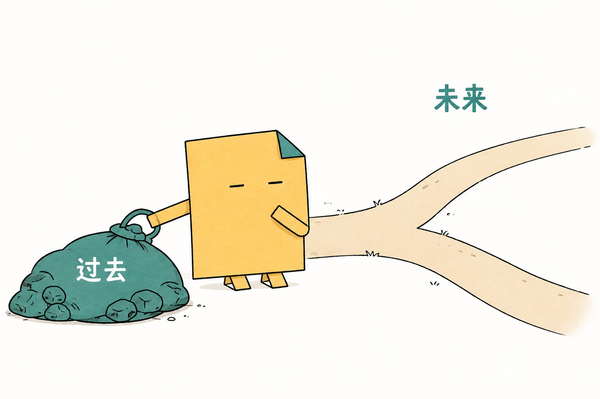
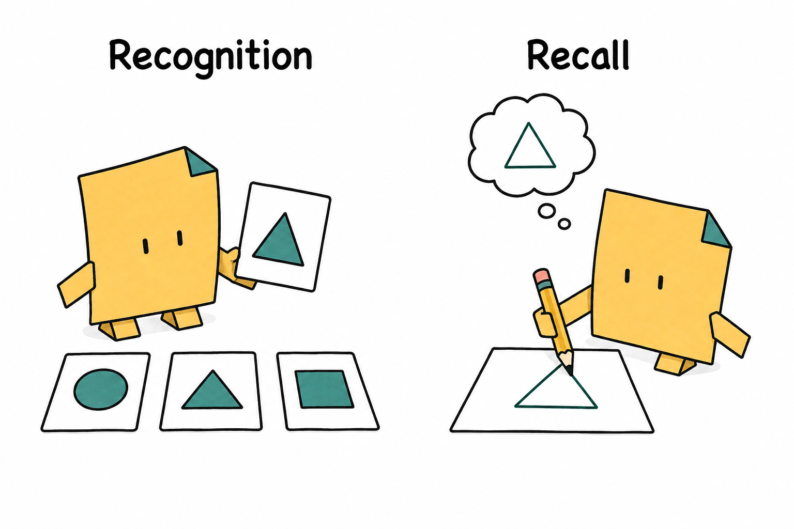
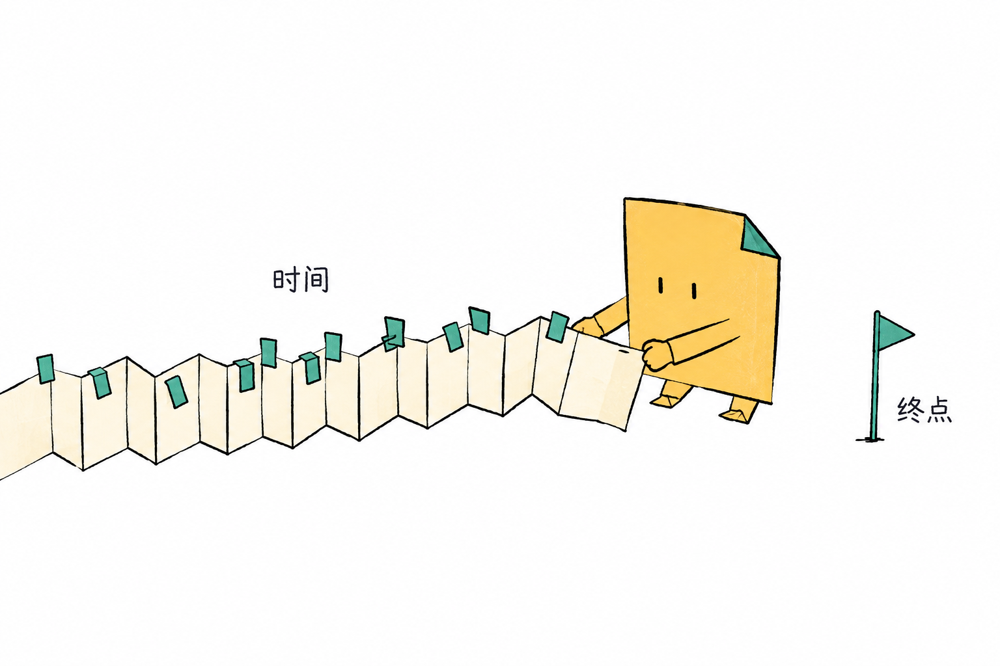

Codex
macOS 有历史成功案例。当前原生工具实际开放的模型和额度为准。Historical macOS successes. The live native tool determines available models and quota.
把你想理解的事，变成一页讲得清楚的图文。装进你正在用的 AI 工具，像平时一样提问。Turn what you want to understand into a clear, illustrated page. Add one skill to your AI tool, then ask in ordinary language.
v0.1 预览版 · 当前仓库私有，安装需访问权限。三宿主的验收程度不同。v0.1 preview · Private repository; installation requires access. Verification differs by host.

票已经买了，还一定要去吗？
无法收回的钱已经花了。接下来，要看未来的付出与收获。Bought the ticket. Still have to go?
Money you cannot recover is already spent. Consider the costs and benefits ahead.
生成时用你的 AI 工具。
读成品时，只要浏览器。Your AI tool makes it.
A browser is all you need to read it.
需要 Node.js 22.20.0+。已安装过时，先保留同名 skill 的本地修改。Requires Node.js 22.20.0+. Preserve local edits to an existing AhaFold installation first.
npx skills@1.5.23 add AGI-is-going-to-arrive/ahafold --skill ahafold --copy这是通过 npx 获取 GitHub 上的 skill，无需另装 AhaFold npm 包。This uses npx to get the skill from GitHub. No separate AhaFold npm package is needed.
用 /skills 检查安装。Check the installation with /skills. Codex: $ahafold · Grok / Antigravity: /ahafold
使用 AhaFold，给初学者解释沉没成本。用简体中文，做成一页带插图的说明。Use AhaFold to explain sunk cost to a beginner. Write one illustrated page in English.
ahafold-output/<topic-slug>/index.html
可分享自包含 HTML，原图保存在旁边的 assets/。读者不需要 AI 账号。Share the self-contained HTML; originals stay in the adjacent assets/ folder. Readers need no AI account.
给谁看、解释什么、用什么语言。下面20个场景，选一个，换成你的材料就能试。这些是使用建议，不是逐项验收承诺。Who is it for, what should it explain, and in which language? Pick one of these twenty suggested uses and supply your material. These are prompts to try, not twenty verified outcomes.
一个生活场景 + 判断条件An everyday scene + the conditions that matter
使用 AhaFold，用买了电影票却不想去的例子，给初学者解释沉没成本。用简体中文做一页图解，说明哪些钱还能收回。Use AhaFold to explain sunk cost to a beginner through a movie ticket they no longer want to use. Write an illustrated page in English and distinguish money that can still be recovered.
并列对照 + 各举一例Side-by-side comparison + one example each
使用 AhaFold，给学生解释识别和回忆的区别。用选择题与填空题举例，做成简体中文对照图解。Use AhaFold to explain recognition versus recall to a student. Compare multiple-choice and fill-in-the-blank questions in an illustrated English page.
旅程图 + 类比的边界A journey + where the analogy breaks
使用 AhaFold，给十岁孩子解释水循环。用简体中文，画出水的旅程，说明云并不是装水的袋子。Use AhaFold to explain the water cycle to a ten-year-old in English. Illustrate the journey of water and explain why a cloud is not a bag of water.
可调整的例子 + 明确假设An adjustable example + explicit assumptions
使用 AhaFold，用本金100、固定年利率5%、每年复利的假设，解释时间的影响。用简体中文，加一个年数控件，注明忽略税费且不代表真实收益。Use AhaFold to explain time and compounding in English. Assume a principal of 100, a fixed annual rate of 5%, and annual compounding. Add a years control; state that taxes and fees are excluded and returns are hypothetical.
先总览，再按章节读An overview, then linked sections
使用 AhaFold，把我提供的 article.md 讲给没有背景知识的人。用简体中文，先给结论，再分章节配图，保留重要条件、例外和数字。Use AhaFold to explain my supplied article.md to someone without background knowledge. Write in English: answer first, then illustrated sections. Preserve important conditions, exceptions, and numbers.
步骤 + 责任人 + 完成条件Steps + owners + completion conditions
使用 AhaFold，把我提供的入职流程做成简体中文图解。每一步写清谁负责、做什么、完成的标志，以及卡住时找谁。Use AhaFold to turn my supplied onboarding process into an illustrated English guide. Show who acts, what they do, what counts as done, and whom to contact when blocked.
状态区分 + 常见误读Distinct states + common misreadings
使用 AhaFold，把这份借用规则讲给第一次借工具的人。用简体中文，区分提交申请、确认预约、实际取件，保留归还与取消条件。Use AhaFold to explain these borrowing rules to a first-time tool-library visitor in English. Separate submitting a request, confirming a reservation, and collecting an item. Preserve return and cancellation conditions.
同一条件下比较，不编数据Shared assumptions; missing data stays visible
使用 AhaFold，根据我提供的方案A和方案B做简体中文对照页。沿用相同的预算与人数，写清各自适用条件，缺失的数据标出来。Use AhaFold to compare my supplied options A and B in English. Use the same budget and headcount, explain when each fits, and mark missing data.
同一个案例的前后对比One example traced before and after
使用 AhaFold，对比我提供的旧流程与新流程。用简体中文，沿用同一个具体案例，标出变化、保持不变的部分和新增限制。Use AhaFold to compare my supplied old and new processes in English. Trace the same concrete example through both and mark changes, unchanged behavior, and new constraints.
决定 / 未定 / 下一步Decisions / open questions / next steps
使用 AhaFold，根据这份会议记录做简体中文说明页。分清已决定、待确认、下一步，别把讨论过的想法写成已经承诺的事。Use AhaFold to explain these meeting notes in English. Separate decisions, open questions, and next steps. Do not turn discussed ideas into commitments.
只输出插图与图注Images and captions only
使用 AhaFold，为我提供的文章生成3张小折插图，只交付图片和图注。每张表达不同的关键意思，正文不重写。Use AhaFold to make three Fold illustrations for my supplied article. Deliver only the images and captions, each explaining a different key idea. Do not rewrite the article.
配图建议；不调用生图An illustration plan; no image calls
使用 AhaFold，先不要生图。读这篇文章，说明哪些段落值得配图、每张图解释什么、小折在做什么。Use AhaFold to plan illustrations for this article without generating images yet. Explain where each belongs, what it teaches, and what Fold is doing.
熟悉的情境 + 适用边界A familiar situation + limits
使用 AhaFold，给不懂电脑的家人解释云备份与文件同步的区别。用简体中文，以误删照片为例，讲清各自能做什么、不能保证什么。Use AhaFold to explain cloud backup versus file sync to a nontechnical family member in English. Use an accidentally deleted photo and show what each can and cannot guarantee.
请求路径 + 关键状态A request path + important states
使用 AhaFold，根据这段接口说明，给产品同事解释一次下单请求。用简体中文，区分已收到、处理中、已成功，不把超时当失败。Use AhaFold to explain an order request to a product teammate from this API description. Write in English; distinguish received, processing, and completed. Do not assume a timeout means failure.
时间线 + 具体失败情境A timeline + a concrete failure case
使用 AhaFold，根据我提供的材料解释重复点击订票为什么可能重复下单。用简体中文，画出请求与回复的时间顺序，保留幂等键的适用条件。Use AhaFold to explain from my supplied material why retrying a booking may duplicate an order. Write in English, show request and response timing, and preserve the conditions for idempotency keys.
代码旁的解释 + 边界Explanation beside code + boundaries
使用 AhaFold，解释这段 TypeScript 接收 JSON 的代码。用简体中文，保留英文术语与原代码，区分编译期检查、运行时验证和类型断言。Use AhaFold to explain this TypeScript code that receives JSON. Write in English, preserve the original code, and distinguish compile-time checking, runtime validation, and type assertions.
局部改写；不重新生图A focused rewrite; no new images
使用 AhaFold，把现有页面第二段改成初学者能懂的简体中文。保留关键条件，其他内容和已有插图不变。Use AhaFold to rewrite the second paragraph of this page for a beginner in English. Keep its important conditions, the other content, and every existing image unchanged.
换正文语言，保留原图A new prose language; unchanged image bytes
使用 AhaFold，把这个HTML正文译成简体中文，保留原图。图片中的英文标签在中文图注里解释，不声称已修改图片内文字。Use AhaFold to translate this HTML text into English and keep the original image. Explain its Chinese labels in an English caption without claiming the image text was edited.
可选中文字的对照页A comparison with selectable text
使用 AhaFold，把这份术语表做成简体中文HTML对照页。不要角色、不要图片，保留准确的定义和一个最短例子。Use AhaFold to turn this glossary into an English HTML comparison. No character or raster images. Keep accurate definitions and one short example each.
明确次数 + 如实标注未完成A call limit + honest incomplete status
使用 AhaFold，把这份材料做成简体中文图解。本次最多调用原生生图2次，包括重试；预算用完时交付可读草稿并标出缺少的图片。Use AhaFold to illustrate this material in English. Make at most two native image calls, including retries. If the budget runs out, deliver a readable draft and identify missing illustrations.
这些是仓库里已有的真实 HTML，可阅读、操作和查看来源。成品语言写在链接旁；切换本介绍页的语言不会改动原图或示例。These existing HTML artifacts can be read and explored, with sources in their notes. Output languages are shown below; switching this page does not translate the original images or examples.


没有常驻服务，没有统一模型 SDK。图片使用当前宿主开放的原生工具，文字与精确图解保留在 HTML。下面是历史验收范围，新版仍需重新验证。No background service or shared model SDK. Images use the native tools available in your current host; prose and precise diagrams stay in HTML. Historical coverage is below; the revised workflow still needs fresh acceptance.
macOS 有历史成功案例。当前原生工具实际开放的模型和额度为准。Historical macOS successes. The live native tool determines available models and quota.
部分通过。原生生成与编辑可用，仍需复核图文关系、技术事实和手机阅读。Partially verified. Native generation and editing work; image relationships, technical facts, and mobile reading need review.
尚未验收完成。历史调用受额度限制，不能承诺完整生成成功。Acceptance incomplete. A historical call hit quota limits; a complete successful workflow is unverified.
Windows / Linux 的安装到原生成品链路尚未实测。生成会把材料发送给宿主云服务；费用可能未知，订阅不代表无限生图。Windows / Linux installation-to-native-output workflows are untested. Generation sends material to the host cloud service; cost may be unknown and subscriptions do not imply unlimited images.
可以。直接说“只交付插图”“先规划，不生图”或“不要角色、不要图片”。只翻译正文时，保留原图，不重新生图。
Yes. Ask for “images only,” “plan without generating,” or “no character or images.” Translating prose preserves the original image without new generation.
说明给谁看、解释什么、使用什么语言就够了。材料长时可以补充“先给总览，分章节讲，保留条件和例外”。
Name the reader, the topic, and the language. For long material, add “start with an overview, explain it in sections, and preserve conditions and exceptions.”
缺少工具、遇到429或认证失败时，停止这条生图路线。可以交付标明缺图的可读草稿，不会把占位图说成生成成功。
A missing tool,429, or authentication failure stops that image route. A readable draft can identify missing illustrations without presenting placeholders as successful generation.
借鉴 Ian Xiaohei Illustrations 的认知动作配图，以及 visual-explainer 的可读 HTML。小折与模板独立创作，无需安装上游；详见许可说明。
It draws on Ian Xiaohei Illustrations for conceptual action and visual-explainer for readable HTML. Fold and the templates are independently authored; no upstream installation is required. See the attribution notice.
没有独立的 AhaFold npm 包，也不需要它来安装 skill。上面的 npx 命令运行 skills 安装器，从 GitHub 下载。当前私有仓库仍需访问权限。
There is no separate AhaFold npm package, and skill installation does not require one. The npx command runs the skills installer and retrieves the skill from GitHub. The private repository still requires access.
不能。要检查事实、数字、图中文字及类比边界。目前没有真人对照实验支持显著降低学习成本的结论。可以用它帮助理解，也要保留自己的判断。
No. Check facts, numbers, image labels, and analogy limits. There is no human comparison study establishing lower learning costs. Use it as an aid to understanding and keep reviewing the result.